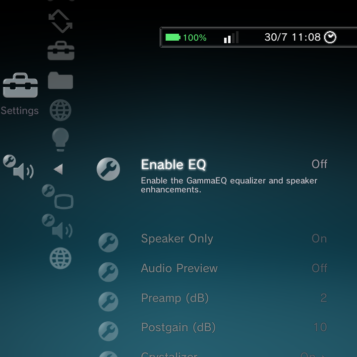
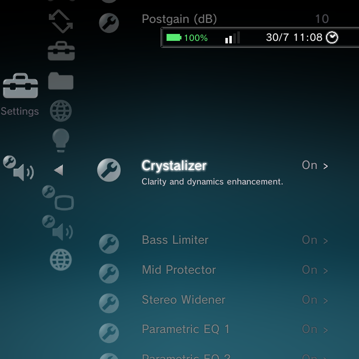

GammaEQ is a system-level equalizer and set of speaker enhancements that shapes the sound of everything your handheld plays, games, music, and video alike. It lives under Settings > GammaEQ, and it is off until you switch it on.

GammaEQ is available on supported devices. It sits close to the audio path, so its effect applies system-wide rather than to one app.
Getting started
| Option | What it does | Default |
|---|---|---|
| Enable EQ | The master switch for GammaEQ | Off |
| Speaker Only | Apply the effects only to the speakers, not to headphones | On |
| Audio Preview | Play a looping sample while you tune, so you can hear changes | Off |
| Preamp (dB) | Gain applied before the EQ | 2 |
| Postgain (dB) | Gain applied after the EQ | 10 |
Turn on Audio Preview while you adjust, so you can hear each change immediately without having to play something yourself.
The enhancement modules
Below the basics are several enhancement modules, each with its own on/off switch and fine controls.

- Crystalizer: adds clarity and brings back dynamics, for a crisper, livelier sound. Tune amount, mix, frequency, limit, and pre/post gain.
- Bass Limiter: protects the small speakers from overloading on heavy bass. Tune threshold, attack, release, and frequency.
- Mid Protector: guards the midrange against distortion. Tune the high-pass and low-pass points, threshold, attack, and release.
- Stereo Widener: widens the stereo image for a bigger sound. Tune amount, mix, pre-gain, limit, high-pass, and centre.
- Parametric EQ 1 and Parametric EQ 2: two banks of parametric bands to shape the frequency response exactly how you like.
Tips
- Speakers on small handhelds benefit most from the Crystalizer and a touch of Stereo Widener, with the Bass Limiter on to keep things clean at volume.
- Leave Speaker Only on if you want your headphones to stay untouched.
- If something sounds wrong, turn Enable EQ off to compare against the untouched sound, then re-enable and adjust.
Where to go next
- Settings Reference for the whole Settings tree.
- Media for the built-in music, photo, and video players.